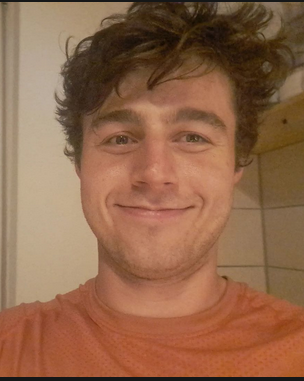

ML research engineer · LLM optimization @ OpenEuroLLM · ELLIS Tübingen
I'm a research engineer at OpenEuroLLM and the ELLIS Institute Tübingen, working on LLM pretraining: optimizers, scaling laws, and keeping large training runs efficient and stable.
Before that I spent two years as an ML engineer at SoftCo, automating AP workflows using machine learning. I worked on data pipelining, modeling and deployment. I studied mathematics at Trinity College Dublin and machine learning at the University of Tübingen.
Muon and its variants. why and when orthogonalized and LMO-based updates work. Both theory and in language model pretraining.
Training dynamics of large transformers, mixture-of-experts and linear attention architectures.
Predicting how large models will behave from small training runs, predicting optimal hyperparameters and decreasing computational costs.
E. Shulgin*, S. Laing*, A. Orvieto, P. Richtárik · *equal contribution
Muon updates matrix-valued parameters along approximately orthogonalized directions and often trains large language models faster than AdamW, yet it remains unclear when and why orthogonalization helps. We study PolarGD, the orthogonalized update at the core of Muon, on matrix quadratics, where optimizers can be analyzed in closed form, and compare update directions under line search to remove the effect of learning-rate tuning. Orthogonalization pays off when the gradient is far from low rank and its largest singular directions see high curvature. PolarGD reaches the minimizer in one step whenever the rows of the error are orthogonal with equal norms, for any Hessian, whereas gradient descent needs all Hessian eigenvalues to be equal; and unlike sign descent, PolarGD is unaffected by rotations of the problem. Over many steps, PolarGD acts as gradient descent preconditioned by the current iterate, so its speed is governed by the conditioning of the iterate rather than of the Hessian. This explains fast regimes as well as a slow one, caused by tiny singular values of the iterate, in which PolarGD is much slower than gradient descent. Finally, the few Newton-Schulz iterations used in Muon treat these tiny singular values as gradient descent does, so fewer iterations can converge faster than exact orthogonalization; in a transformer trained with Muon, about a quarter of the singular values of the attention matrices fall in this regime.
S. Laing, A. Orvieto
The Adam optimizer is a cornerstone of modern deep learning, yet the empirical necessity of each of its individual components is often taken for granted. This paper presents a focused investigation into the role of bias-correction, a feature whose contribution remains poorly understood. Through a series of systematic ablations on vision and language modelling tasks, we demonstrate that the conventional wisdom surrounding bias correction is misleading. In particular, we demonstrate that in the optimal hyper-parameter configuration, the inclusion of bias correction leads to no improvement in final test performance. Moreover, unless appropriate learning rate scheduling is implemented, the inclusion of bias correction can sometimes be detrimental to performance. We further reinterpret bias correction as a form of implicit learning rate scheduling whose behaviour is strongly dependent on the choice of smoothing hyper-parameters β1, β2 ∈ [0, 1). Our findings challenge the universal inclusion of this component.
A. K. Jha*, D. A. Onuţu*, N. Mallik*, S. Haldar*, S. Laing, N. Ajroldi, S. Liu, J. Vanschoren, A. Klein · *equal contribution
Scaling laws guide the design choices for training large foundation models, but deriving them involves training an exhaustive grid over hyperparameters, token budgets, and parameter counts, which is computationally expensive. Fitting a scaling law, however, only requires the best-loss frontier across compute scales, discarding most of the trained configurations. We propose a framework for efficient scaling law construction that formulates data collection as a Bayesian optimization problem, and introduce metrics for comparing scaling law fitting methods under constrained compute budgets. We find that progressively expanding the compute budget during acquisition, mirroring the compute-ordered evaluation of configurations in practice, substantially improves recovery efficiency. Augmenting the observed configurations with surrogate-fantasized evaluations then recovers the broader experimental grid, allowing accurate scaling law fitting without training every configuration. Together, these can closely match scaling law fits over a full dense grid at computational savings of up to 10–100×.
Applied category-theoretical techniques to prove several fundamental theorems of algebraic topology.
OpenEuroLLM · ELLIS Institute Tübingen
ELLIS Institute · Max Planck Institute, Tübingen
SoftCo · Dublin
University of Tübingen · Grade 1.3 (sehr gut)
Thesis on adaptive and geometry-aware optimizers, supervised by Antonio Orvieto.
Trinity College Dublin · First Class Honours
Trinity College Academic Gold Medal, awarded for academic excellence throughout four years of study.
Thesis on category theory in algebraic topology.
PyTorch · Megatron-LM · JAX · TP / DP / FSDP · W&B
Python · SLURM · Docker · Linux · SQL
non-convex optimization · non-Euclidean optimization · stochastic optimization · Bayesian inference